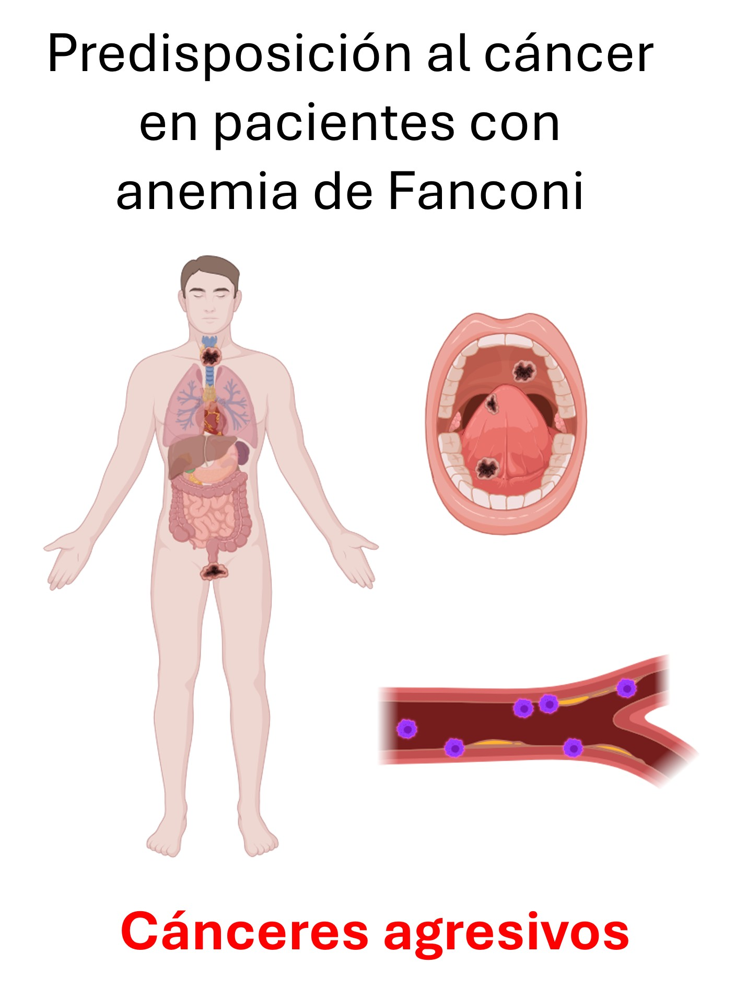
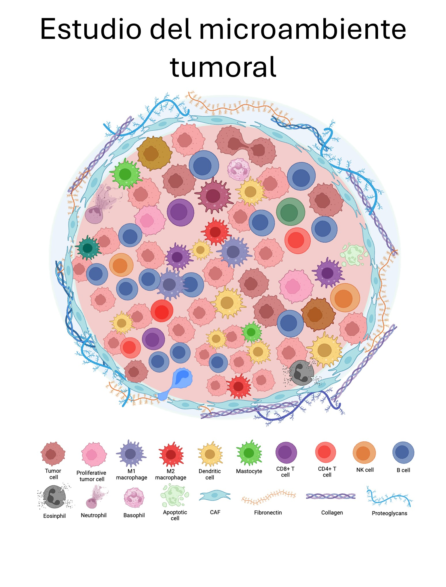

Introducción
1 Contexto general
El cáncer no debe entenderse únicamente como una proliferación descontrolada de células, sino como un proceso complejo en el que múltiples poblaciones celulares interactúan dentro de un tejido. Estas interacciones ocurren en un espacio físico definido, conoció como el microambiente tumoral.
El microambiente tumoral está compuesto por células epiteliales, células del estroma, fibroblastos, vasos sanguíneos y diversas poblaciones inmunes. La forma en la que estas células se organizan espacialmente dentro del tejido constituye una fuente de información biológica relevante, debido a que se generan patrones de organización celular que pueden influir en la progresión tumoral, la invasión, la respuesta inmune y la resistencia al tratamiento.
Por ejemplo, la proximidad entre células inmunes y tumorales, la formación de agrupamientos o la presencia de regiones con baja densidad celular pueden reflejar procesos como inmunosupresión o evasión inmune.
En este contexto, la caracterización de la organización espacial celular se ha convertido en un problema central en el estudio del microambiente tumoral.
2 Contexto clínico: Anemia de Fanconi
La anemia de Fanconi (FA) es una enfermedad genética caracterizada por defectos en los mecanismos de reparación del ADN, lo que conduce a inestabilidad genómica y un alto riesgo de desarrollar cáncer, particularmente carcinomas.
Los pacientes con FA presentan una mayor incidencia de carcinoma de células escamosas de cabeza y cuello, con aparición temprana y comportamiento clínico agresivo.

Los pacientes con FA presentan una elevada susceptibilidad al desarrollo de carcinomas de células escamosas.
Sin embargo, el desarrollo tumoral no depende únicamente de las células cancerosas. Los tumores se encuentran inmersos en un entorno complejo denominado microambiente tumoral, compuesto por células inmunes, fibroblastos, células endoteliales, matriz extracelular y otros componentes que interactúan continuamente con las células tumorales.
Estas interacciones pueden influir en procesos como la progresión tumoral, la invasión, la respuesta inmune y la respuesta al tratamiento. Por ello, en este trabajo nos centraremos en el estudio del microambiente tumoral, particularmente en la organización espacial de las distintas poblaciones celulares que lo conforman.
Comparar el microambiente tumoral de muestras provenientes de pacientes con FA y de pacientes no FA permite investigar si existen patrones espaciales distintivos con potencial relevancia biológica y clínica.

Representación de los principales componentes celulares presentes en el microambiente tumoral y de sus interacciones.
3 De la imagen a los datos espaciales
El análisis del microambiente tumoral se basa en imágenes obtenidas mediante técnicas de inmunofluorescencia cíclica.

A partir de estas imágenes se realiza segmentación celular para identificar cada célula y obtener sus coordenadas espaciales en el plano \((x,y)\).

Cada célula es además clasificada según su tipo celular, el cual en este contexto representará su fenotipo.
3.1 Células tumorales
- Tumor cells
- Ki67+ tumor cells
- IBA1+ tumor cells
- IBA1/HLA-DBP1+ tumor cells
3.2 Células linfoides
- NK cells
- B cells
- Effector CD8+ T cells
- CD4+ T cells
- Regulatory T cells
3.3 Células mieloides
- Neutrophils
- Dendritic cells
- Other APCs
- M1/M0 macrophages
- M2 macrophages
3.4 Células no tumorales
- Endothelial cells
- Stromal cells
- Other
De esta manera, cada muestra puede representarse como una nube de puntos (point cloud), donde cada punto corresponde a una célula localizada en el tejido.
Imagen → Segmentación → Coordenadas → Nube de puntos
4 Limitaciones de los métodos clásicos
El análisis espacial tradicional suele basarse en métricas como:
- densidad celular,
- proporciones entre tipos celulares,
- distancias promedio,
- análisis de vecinos cercanos.
Estas aproximaciones describen propiedades locales, pero no capturan completamente la estructura global de la organización espacial.
En particular, dos muestras pueden presentar características estadísticas similares y, sin embargo, diferir significativamente en su patrón de organización espacial.
5 Pregunta de investigación
Partiendo de estas observaciones se plantea la siguiente hipótesis:
La organización espacial celular contiene información que puede ser capturada mediante descriptores topológicos y utilizada para comparar distintos contextos biológicos.
Las preguntas centrales son:
- ¿Es posible clasificar los tumores de paciente con y sin anemia de Fanconi por medio del realizar análisis topológico de datos en su microambiente tumoral?
De ser este el caso,
- ¿es posible identificar cuáles son las propiedades de la organización espacial que los distinguen?
6 ¿Por qué Análisis Topológico de Datos?
Las preguntas centrales de este trabajo buscan determinar si existen diferencias en la organización espacial del microambiente tumoral entre pacientes con y sin anemia de Fanconi. Dado que estas diferencias pueden involucrar patrones complejos de agrupamiento y conectividad celular, se requieren herramientas capaces de capturar la estructura global de los datos.
El Análisis Topológico de Datos permite describir y comparar la organización espacial de las células a múltiples escalas. Si los tumores de pacientes con y sin anemia de Fanconi presentan arquitecturas espaciales distintas, estas diferencias deberían reflejarse en sus características topológicas, lo que podría utilizarse tanto para identificarlas como para clasificar las muestras.
7 Objetivo general
Utilizar herramientas de TDA para extraer características topológicas de la organización espacial celular y evaluar su capacidad para comparar y distinguir distintos contextos biológicos en tejido tumoral.
Para ello se emplean:
- Homología persistente.
- Diagramas de persistencia.
- Distancias de Wasserstein.
- Clustering jerárquico.
- Validación estadística mediante TopKAT.
8 Workflow general
El pipeline completo del análisis se resume mediante el siguiente esquema:
- Imagen
- Segmentación celular
- Coordenadas espaciales
- Point Cloud
- Complejo de Rips
- Homología persistente
- Diagramas de persistencia
- Distancia de Wasserstein
- Clustering
- Interpretación
En las siguientes secciones se desarrollan los fundamentos matemáticos y computacionales que sustentan este enfoque, así como su aplicación al análisis de patrones celulares en tejido tumoral.